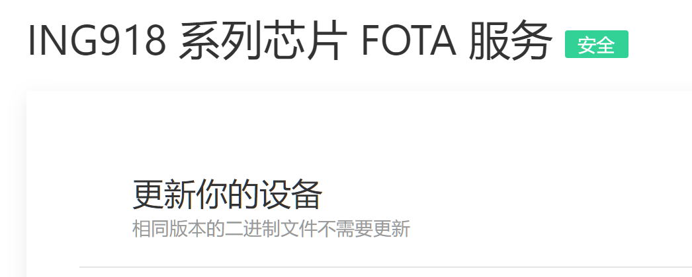

空中升级过程的“安全”包含两重含义：
-
鉴权（Authentication）：对升级包的真实性进行校验；
-
加密（Encryption）：保护升级包内的数据不被非法读取。
本文使用 SHA-256 ECDSA 算法对升级包签名，实现鉴权；通过 ECDH 算法进行密钥交换，然后使用对称加密保护数据。这两种 “安全”也可以通过蓝牙的配对实现，但是需要额外的操作步骤（按键、输入密码等），存在副作用（产生不必要的配对数据），使用不够便利。
1. 直接使用
打开 SDK 5.6.2 里的 Thermometer with OTA，设置 SECURE_FOTA 编译开关，重新编译下载。使用
Web 版 FOTA 工具 连接到到设备，即可进行安全升级。
Web 版 FOTA 工具 支持安全或者不安全两种模式，连接到设备之后，会出现醒目的提示：

2. 步骤详解
0. 密钥体系
-
根密钥对
设备预置根公钥。
-
会话密钥对
设备、升级工具在初始化时各自随机生成一对会话密钥对。
-
共享密钥
升级工具的会话根公钥通过根私钥签名后告知设备，设备验签通过后，结合自身的会话私钥计算出共享密钥； 升级工具直接读取设备的会话公钥，结合自身的会话私钥计算出共享密钥。升级包的数据在传输时使用此共享 密钥加密。
1. 编译 uECC 库
编译 uECC 前，请确认接受其协议。使用 Gnu Arm Toolchain 编译 uECC 时，建议使用以下选项：
-D uECC_PLATFORM=uECC_arm_thumb \
-D uECC_SUPPORTS_secp160r1=0 \
-D uECC_SUPPORTS_secp224r1=0 \
-D uECC_SUPPORTS_secp256k1=0 \
-Os -ffunction-sections -fdata-sections -fshort-wchar
将 uECC 连同 SHA-256 编译成一个库 ing918_uecc.lib。
2. uECC 相关的初始化
int ecc_rng(uint8_t *dest, unsigned size)
{
// 使用 ING918XX 内置的硬件随机数发生器
platform_hrng(dest, size);
return 1;
}
// 使用 NIST P-256 曲线参数
#define CURVE uECC_secp256r1()
uECC_set_rng(ecc_rng);
uECC_make_key(session_keys.pk, session_keys.sk, CURVE);
3. 为 FOTA 服务添加公钥特征
void ota_init_service()
{
// ...
att_ota_pk_handle = att_db_util_add_characteristic_uuid128(uuid_ota_pk,
ATT_PROPERTY_READ | ATT_PROPERTY_WRITE_WITHOUT_RESPONSE | ATT_PROPERTY_DYNAMIC, NULL, 0);
}
4. 密钥交换流程
if (att_handle == ATT_OTA_HANDLE_PK)
{
if ((buffer_size != sizeof(session_keys.pk) * 2)
|| (uECC_valid_public_key(buffer, CURVE) == 0) // 会话根公钥是否合法
|| (uecc_verify_pk(buffer, sizeof(session_keys.pk), buffer + sizeof(session_keys.pk),
root_pk))) // 用根公用验证会话根公钥
{
ota_ctrl[0] = OTA_STATUS_ERROR;
return 0;
}
memcpy(session_keys.peer_pk, buffer, sizeof(session_keys.peer_pk));
uECC_shared_secret(buffer, session_keys.sk, session_keys.dh_sk, CURVE);
// 将 ECDH 的输出计算一次 SHA-256，作为共享密钥
calc_sha_256(session_keys.xor_sk, session_keys.dh_sk, sizeof(session_keys.dh_sk));
}
5. 数据解密验证流程
升级工具对每一页（8192 字节）的数据分别用会话根私钥进行签名，然后加密、追加 CRC （这里由于存在签名，所以 CRC 并不必要）。 设备侧在将数据写入 Flash 之前，先检查 CRC，再解密，最后用升级工具的会话公钥验证签名。
出于演示目的，Thermometer with OTA 里的加密重复使用了共享密钥的 SHA-256 做异或计算。
3. 风险提示
- 上述过程未涉及对设备的鉴权，恶意第三方可以通过虚拟设备的方法获取升级包内容；
- 示例中使用了 NIST P-256 曲线，这套曲线参数有人认为是 不安全 的；
- 加密过程仅做演示。